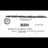

<html lang="en">
 <head>
<!-- Favicon -->
<link rel="shortcut icon" href="../../favicon.ico">
  <meta charset="utf-8"/>
  <title>
   Homegrown Terror: JFK Docs Show US Considered Attacks at Home to Blame on Cuba
  </title>
  <meta content="Post on /v/Conspiracy from 2017-10-31 by salvia_d." name="description"/>
  <meta content="Homegrown Terror: JFK Docs Show US Considered Attacks at Home to Blame on Cuba" property="og:title"/>
  <meta content="Post on /v/Conspiracy from 2017-10-31 by salvia_d." property="og:description"/>
  <link href="../../static/css/page.css" rel="stylesheet"/>
  <meta content="https://voat.conspiracy.hackliberty.org/thumbnails/ca/76/ca764c02-3b7c-4622-a28c-70f74a27694c.jpg" property="og:image"/>
  <meta content="https://voat.conspiracy.hackliberty.org/v/conspiracy/2219343.html" property="og:url"/>
  <meta content="width=device-width, initial-scale=1" name="viewport"/>
  <link href="https://voat.conspiracy.hackliberty.org/v/conspiracy/2219343.html" rel="canonical"/>
  <meta content="article" property="og:type"/>
  <meta content="Voat /v/Conspiracy Archive" property="og:site_name"/>
  <meta content="en_US" property="og:locale"/>
  <meta content="summary_large_image" name="twitter:card"/>
  <meta content="Homegrown Terror: JFK Docs Show US Considered Attacks at Home to Blame on Cuba" name="twitter:title"/>
  <meta content="Post on /v/Conspiracy from 2017-10-31 by salvia_d." name="twitter:description"/>
  <meta content="https://voat.conspiracy.hackliberty.org/thumbnails/ca/76/ca764c02-3b7c-4622-a28c-70f74a27694c.jpg" name="twitter:image"/>
 </head>
</html>
<body class="dark">
 <div id="container">
  <!-- array (
  'submissionid' => 2219343,
  'creationDate' => '2017-10-31 19:13:18',
  'domain' => 'therealnews.com',
  'formattedContent' => NULL,
  'isAdult' => 0,
  'isAnonymized' => 0,
  'subverse' => 'Conspiracy',
  'thumbnail' => 'ca764c02-3b7c-4622-a28c-70f74a27694c.jpg',
  'title' => 'Homegrown Terror: JFK Docs Show US Considered Attacks at Home to Blame on Cuba',
  'url' => 'http://therealnews.com/t2/story:20337:Homegrown-Terror%3A-JFK-Docs-Show-US-Considered-Attacks-at-Home-to-Blame-on-Cuba',
  'userName' => 'salvia_d',
  'archivedLink' => NULL,
  'archivedDomain' => NULL,
  'isDeleted' => 0,
) -->
  <div style="text-align:center; font-size:24px; font-weight:bold;">
   <a href="../../index.html" style="text-decoration: none; color: inherit;">
    Voat /v/Conspiracy Archive
   </a>
  </div>
  <div class="content" role="main">
   <div class="sitetable linklisting" id="siteTable">
    <div class="submission id-2219343 link type-text" id="submission-2219343">
     <a name="submissionTop">
     </a>
     <p class="parent">
     </p>
     <a class="thumbnail may-blank" href="http://therealnews.com/t2/story:20337:Homegrown-Terror%3A-JFK-Docs-Show-US-Considered-Attacks-at-Home-to-Blame-on-Cuba" target="_self">
      
     </a>
     <div class="entry unvoted">
      <p class="title">
       <a class="title may-blank" href="http://therealnews.com/t2/story:20337:Homegrown-Terror%3A-JFK-Docs-Show-US-Considered-Attacks-at-Home-to-Blame-on-Cuba" tabindex="1" target="_self" title="Homegrown Terror: JFK Docs Show US Considered Attacks at Home to Blame on Cuba">
        Homegrown Terror: JFK Docs Show US Considered Attacks at Home to Blame on Cuba
       </a>
       <span class="domain">
        (
        <a href="https://archive.searchvoat.co/search.php?d=therealnews.com">
         therealnews.com
        </a>
        )
       </span>
      </p>
      <p class="tagline">
       submitted
       <time datetime="2017-10-31T19:13:18+00:00" title="10/31/2017 7:13:18 PM">
        2017-10-31T19:13
       </time>
       by
       <span class="userattrs">
        <a class="author may-blank" href="https://archive.searchvoat.co/search.php?u=salvia_d">
         salvia_d
        </a>
       </span>
      </p>
      <ul class="flat-list buttons">
       <li class="first">
        <a class="comments may-blank" href="https://archive.searchvoat.co/v/Conspiracy/2219343" rel="nofollow">
         3 comments
        </a>
       </li>
      </ul>
     </div>
     <div class="child">
     </div>
     <div class="clearleft">
     </div>
    </div>
    <div class="clearleft">
    </div>
   </div>
   <div class="horizontal-line">
   </div>
   <div class="commentarea">
    <div class="sitetable nestedlisting" id="siteTable">
     <div class="child id-10936190 comment even" style="">
      <div class="entry unvoted">
       <div class="noncollapsed" id="10936190" style=";">
        <p class="tagline">
         <a class="author may-blank" href="https://archive.searchvoat.co/search.php?u=Gringojones">
          Gringojones
         </a>
         <span class="userattrs">
         </span>
         <time datetime="2017-11-01T00:04:34+00:00" title="11/1/2017 12:04:34 AM">
          2017-11-01T00:04
         </time>
        </p>
        <div class="usertext-body may-blank-within" id="commentContent-10936190">
         <div class="md">
          <p>
           <p>
            Was this not an already proven conspiracy? I appreciate broadcasting it for people who have never heard of it, but all of the articles are acting like this is new knowledge.
           </p>
          </p>
         </div>
        </div>
        <ul class="flat-list buttons">
         <li class="first">
          <a class="bylink" href="https://archive.searchvoat.co/v/Conspiracy/2219343/10936190" rel="nofollow">
           link
          </a>
         </li>
        </ul>
       </div>
      </div>
     </div>
     <div class="child id-10934611 comment even" style="">
      <div class="entry unvoted">
       <div class="noncollapsed" id="10934611" style=";">
        <p class="tagline">
         <a class="author may-blank" href="https://archive.searchvoat.co/search.php?u=Ctinainthesky">
          Ctinainthesky
         </a>
         <span class="userattrs">
         </span>
         <time datetime="2017-10-31T20:51:38+00:00" title="10/31/2017 8:51:38 PM">
          2017-10-31T20:51
         </time>
        </p>
        <div class="usertext-body may-blank-within" id="commentContent-10934611">
         <div class="md">
          <p>
           <p>
            All terrorism begins and ends in elected government. Time to consider ending career politics and insist lawmaking become a citizen responsibility like jury duty.
           </p>
          </p>
         </div>
        </div>
        <ul class="flat-list buttons">
         <li class="first">
          <a class="bylink" href="https://archive.searchvoat.co/v/Conspiracy/2219343/10934611" rel="nofollow">
           link
          </a>
         </li>
        </ul>
       </div>
      </div>
     </div>
     <div class="child id-10934150 comment even" style="">
      <div class="entry unvoted">
       <div class="noncollapsed" id="10934150" style=";">
        <p class="tagline">
         <a class="author may-blank" href="https://archive.searchvoat.co/search.php?u=JesusRules">
          JesusRules
         </a>
         <span class="userattrs">
         </span>
         <time datetime="2017-10-31T20:04:34+00:00" title="10/31/2017 8:04:34 PM">
          2017-10-31T20:04
         </time>
        </p>
        <div class="usertext-body may-blank-within" id="commentContent-10934150">
         <div class="md">
          <p>
           <p>
            Operation Northwoods
           </p>
          </p>
         </div>
        </div>
        <ul class="flat-list buttons">
         <li class="first">
          <a class="bylink" href="https://archive.searchvoat.co/v/Conspiracy/2219343/10934150" rel="nofollow">
           link
          </a>
         </li>
        </ul>
       </div>
      </div>
     </div>
    </div>
   </div>
  </div>
 </div>
<!-- Footer Section -->
<footer class="container-fluid mt-3">
  <p class="small mb-0">
    /v/conspiracy archive has 42504 posts and 159856 total comments.
    <a href="https://git.hackliberty.org/c0mmando/voat-conspiracy-archive/">source code</a>.
  </p>
</footer>

<script src="../../static/js/jquery-3.7.1.slim.min.js"></script>
<script src="../../static/js/comments-toggle.js"></script>

</body>
